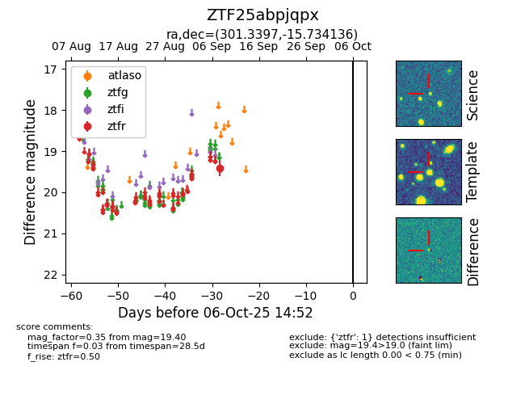

FINK: ZTF25abpjqpx
Lasair: ZTF25abpjqpx
ALeRCE: ZTF25abpjqpx
ZTF25abpjqpx (ztf,fink)
equatorial (ra, dec) = (301.3397,-15.73414)
galactic (l, b) = (26.5429,-23.27758)

last ztfr=19.40
1 ztfr detections